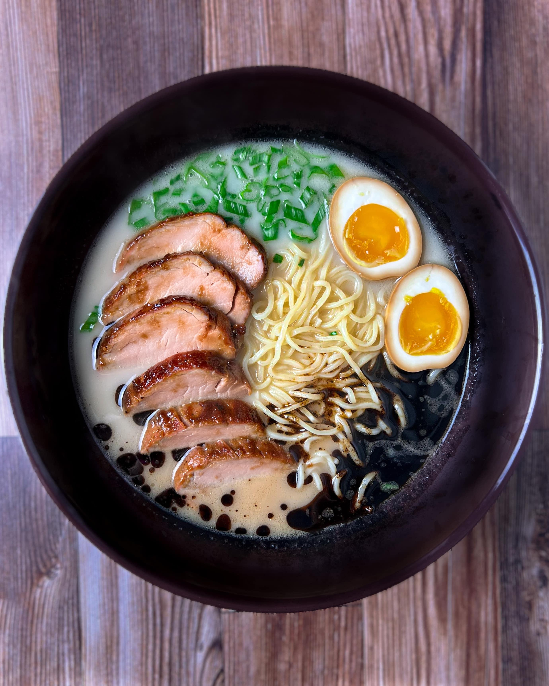
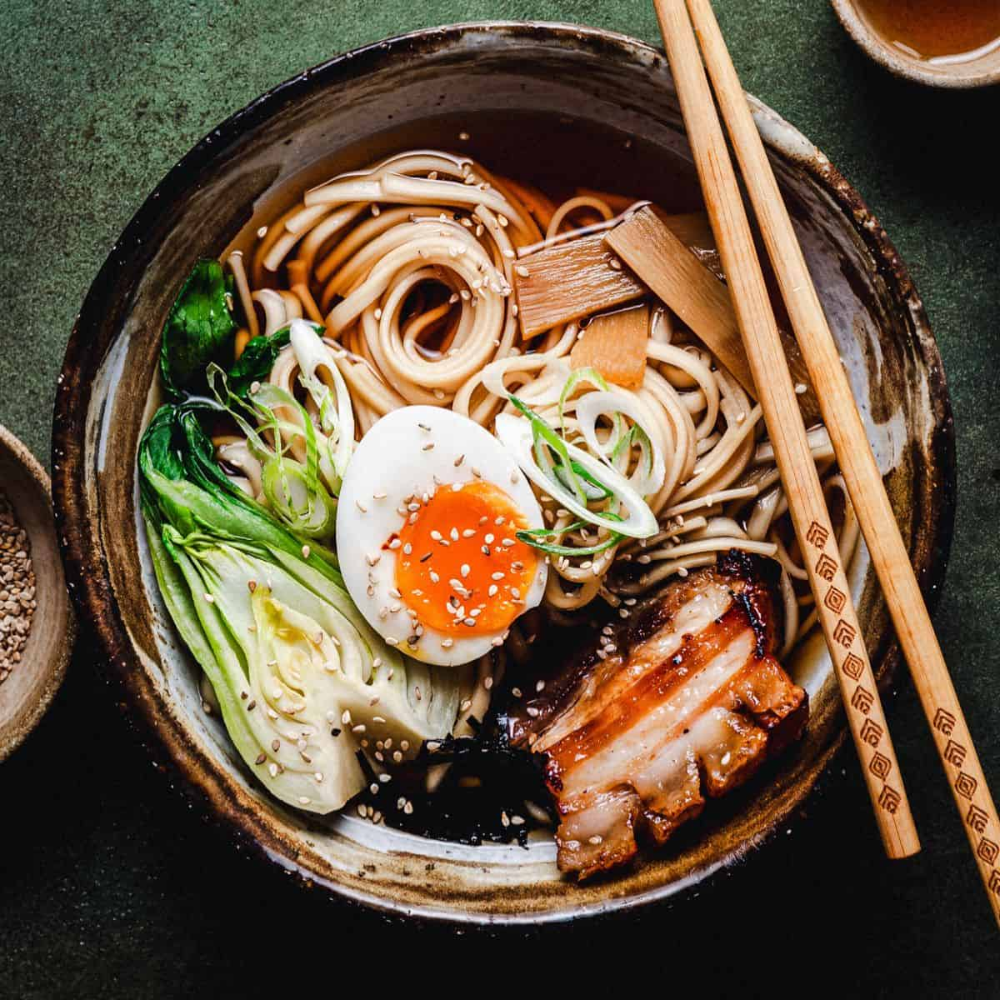
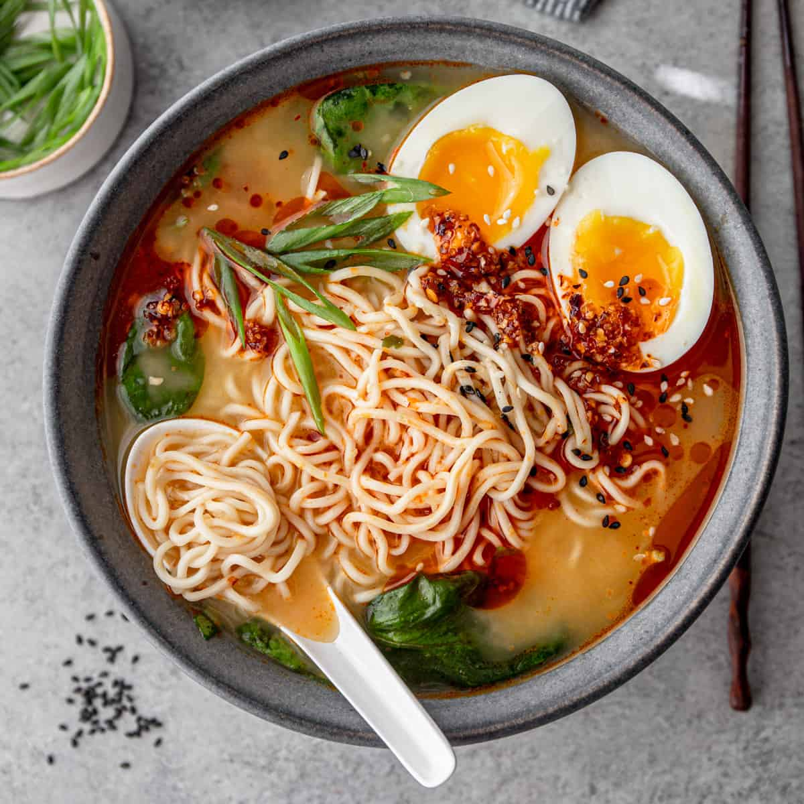
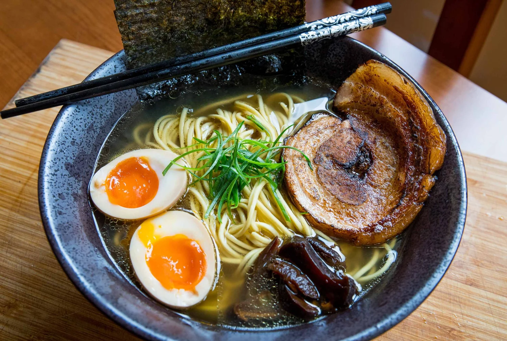
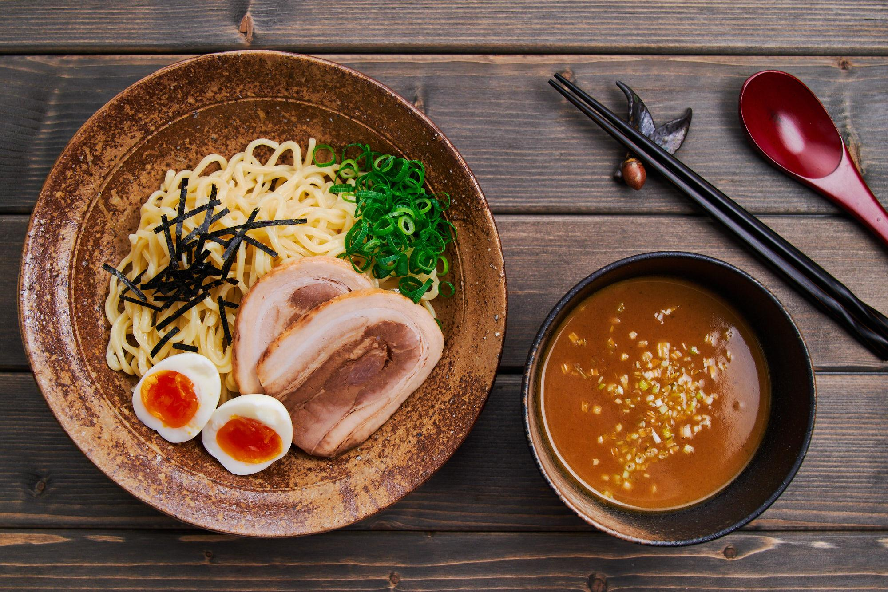
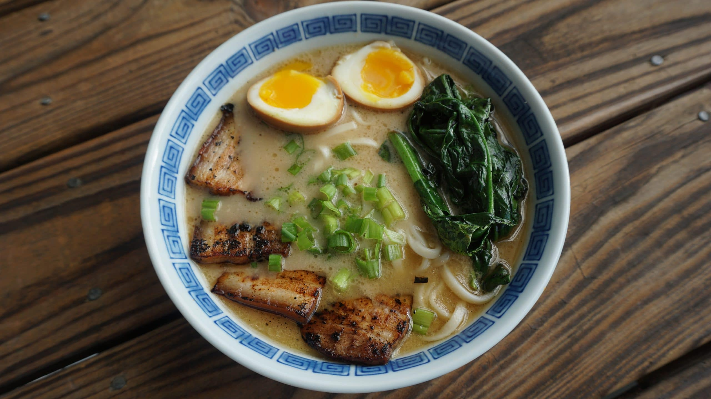

Tonkotsu Ramen
Originario de Kyushu (Hakata), es famoso por su caldo blanco, espeso y cremoso, cocinado a fuego lento durante horas para extraer el colágeno.
$13.400
Originario de Kyushu (Hakata), es famoso por su caldo blanco, espeso y cremoso, cocinado a fuego lento durante horas para extraer el colágeno.
$13.400
Probablemente el más antiguo y común, con un caldo claro a base de pollo o pescado y una base de salsa de soja, dándole un color marrón claro.
$12.000
Originario de Sapporo, utiliza pasta de miso fermentada para dar un sabor intenso y rico, a menudo mezclado con caldo de cerdo o pollo.
$18.000
El más ligero y claro de los caldos, hecho con pollo, verduras o pescado, permitiendo que el sabor sutil del caldo resalte.
$13.800
Fideos fríos o templados servidos por separado de un caldo muy concentrado y espeso, diseñado para mojar los fideos antes de comerlos.
$15.000
Un estilo popular de Yokohama que mezcla el estilo tonkotsu con shoyu, famoso por su caldo denso, fideos gruesos y topping de alga nori.
$16.400